Conheça os diferentes tipos de Processos Gráficos.
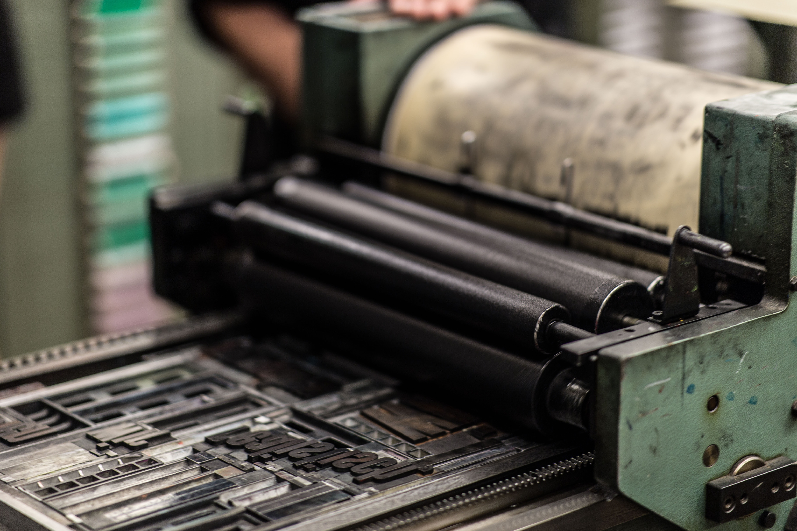
Neste site você encontrará informações ilustradas sobre
diferentes Processos Gráficos como Off Set, Flexografia,
Serigrafia, Rotogravura e a Impressão Digital. Também
falaremos abaixo sobre os diferentes tipos de acabamentos.
Conheça o Off Set
A impressão offset é o processo de impressão planográfico mais
usado pelos setores gráficos em todo o mundo. Isso se dá,
principalmente, pelo alinhamento entre qualidade e custo-benefício
do processo.
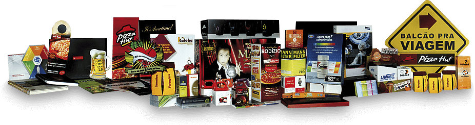
Como é a matriz desse processo? Como a arte é gravada na matriz?
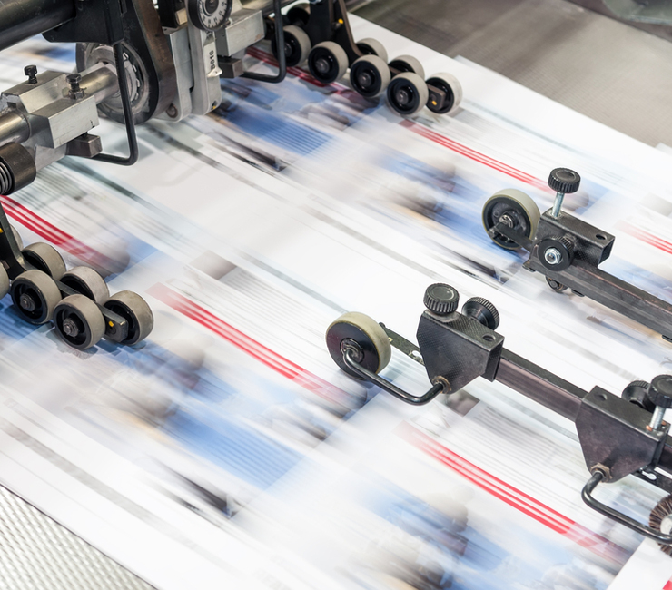
Geralmente metálica (feito de alumínio) e sensível a luz; matriz planográfica
(sem relevos).
A matriz apresenta características físico-químicas: a área com a gravação da imagem
é receptiva à gordura ou óleo e a área negativa é receptiva a água. Assim, quando a matriz
é umedecida, a tinta que é espessa e oleosa, não adere às áreas úmidas e se aloja somente
na região que possui a imagem. A arte pode ser gravada em dois processos: o fotolito (um filme
transparente de acetato ou poliéster coberto com sais de prata, fotossensível e serve como a mídia
intermediária entre a arte final e o impresso), ou digital, chamado CTP (computer-to-plate), um
processo computadorizado que faz uma gravação de imagens e textos a laser nas chapas de alumínio. A chapa
então é gerada a partir do arquivo criado digitalmente, sem a necessidade do uso do fotolito.
Em quais tipo de suporte é possível imprimir?
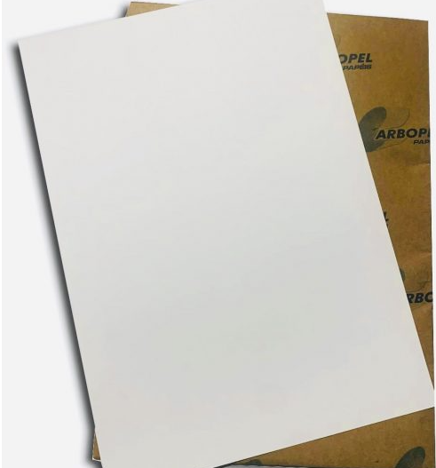
Há uma variedade de suportes para a impressão Off Set. Conheça algumas:
Papel Off Set: papel destinado a tal processo, não revestido
Cartões
Plásticos
Papéis
É possível utilizar esses suportes desde que as configurações da impressora sejam adequadas para ele,
ou seja, dependendo da configuração algumas impressoras podem imprimir determinados tipos de suportes enquanto que outras não.
Até quantas cores é possível imprimir? As tintas tem alguma característica própria?
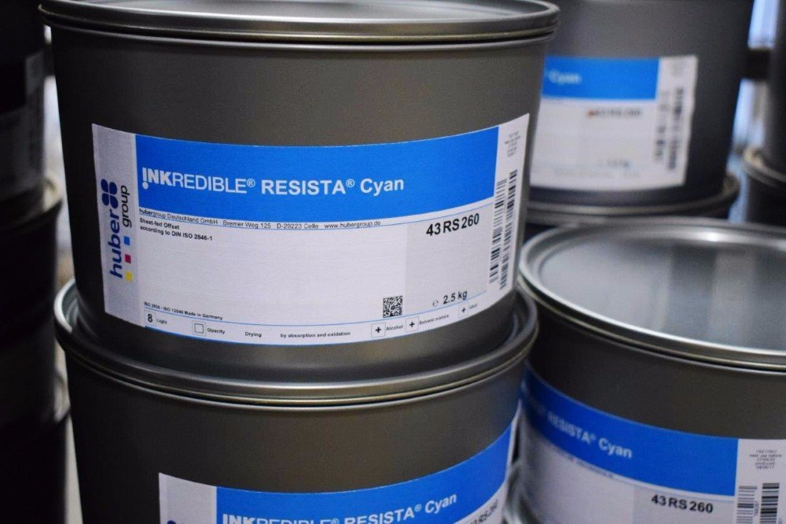
Poder operar em monocromia, bicromia ou policromia. As tintas utilizam cores de pigmento translúcidas para
fazer várias combinações. Quanto a tinta, A tinta para impressão offset é mais viscosa, gordurosa e possui pigmentos
dispersos em um verniz. Esse tipo de tinta quando aplicada, passa por um processo de secagem que se transforme em um filme
aderente ao material.
O Off Set é útil para grandes impressões?
Offset é um tipo de impressão feita em grande tiragem, gerando assim melhor custo benefício para o
consumidor final. Ela é a responsável por cartões de visita, impressão de pastas comerciais, envelopes,
marcadores de livro, blocos e talões em geral
Off set e Litografia: O que tem de semelhança?
A impressão offset é a impressão litografia aperfeiçoada e automatizada, com a diferença de que o offset é indireto,
ou seja, na litografia o papel recebe a imagem diretamente da pedra utilizada. É semelhante ao off set por possuir uma
matriz em que a tinta é absorvida e fica com a figura desejada.
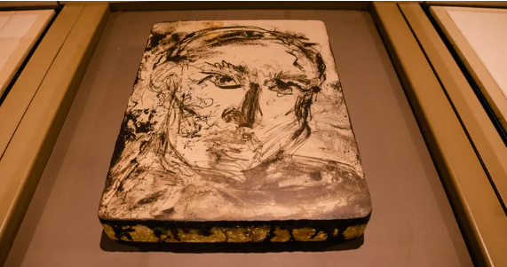
Litografia
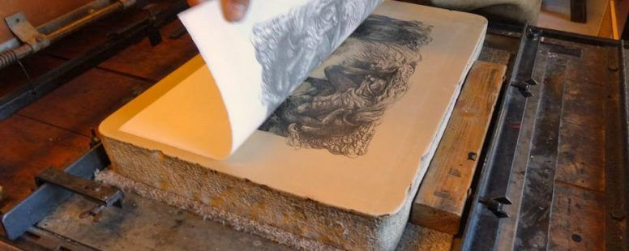
Litografia
Mais sobre Litografia
Clique no link abaixo para obter mais informações sobre a litografia.
A flexografia é um sistema de impressão direto e rotativo, bastante
popular e versátil – que se utiliza de clichês em relevo, que recebem
tinta e a transferem para a superfície a ser impressa. Apenas para ilustrar,
é um princípio similar a um “carimbo”, mas envolve inúmeras variáveis e é altamente
sofisticado.
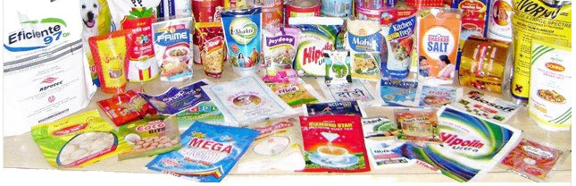
A Matriz
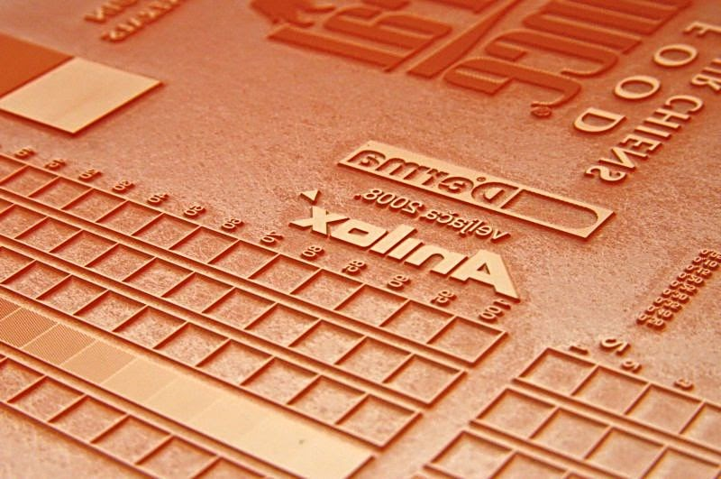
Chamada de clichê, é uma chapa com relevo. A arte destinada à impressão é
gravada na matriz de forma direta, através de pressão.
A matriz relevográfica é caracterizada por zonas de entintagem em alto relevo.
Normalmente, a entintagem ocorre por contato com uma superfície embebida de tinta,
a qual é transferida para as regiões de contato (saliências). A área a ser impressa
está em relevo, quando a superfice é entintada, a área ao redor, sendo mais baixa não
recebe tinta e, portanto não imprime. A tinta é trasferida do clichê diretamente para
o suporte, conhecido como filme de embalagem flexível e comumente utilizado em embalagens de produtos.
Em quais tipos de suporte é possível imprimir?
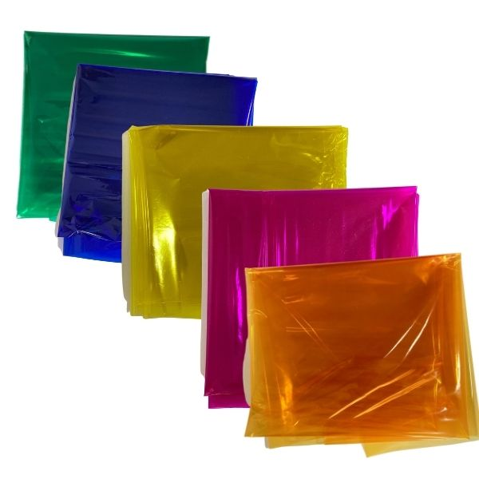
É possível imprimir nos seguintes materiais:
Papéis folhas metálicas;
Celofane, plásticos e polipropeno.
Termoplásticos: materiais mais flexíveis como sacolas e sacos plásticos
É ideal para impressão de etiquetas, sacolas, jornais, papel para presente, entre outros
E sobre as cores e as tintas?
Rótulos coloridos é utilizado a escala CMYK. Cada cor poderá formar cores secundarias ou tercearias. A flexografia imprime
com diferentes sistemas de tintas: a base de solventes, a base de água e as tintas curáveis por ultravioleta ou feixe de elétrons.
Nas tintas UV é feita a cura por radiação ultravioleta, transformando a tinta em estado líquido para o solido instantaneamente.
Qual a tiragem desse meio de impressão?
O sistema de impressão flexográfico foi originalmente desenvolvido para a impressão de todos os materiais para produção de embalagens,
o que inclui o plástico, papel, folha de alumínio, cartão e papelão ondulado.
Todavia, se pode imprimir praticamente qualquer coisa em flexografia. Existem empresas que imprimem tecidos, chapas rígidas,
celulose pré-moldada, componentes eletrônicos, forração de gôndola e por aí vai. Todos os dias, empresas descobrem novas e
empolgantes aplicações para a flexografia.Um dos maiores benefícios desse tipo de impressão é a secagem rápida da tinta.
A flexografia possui ainda alta resistência na tiragem e boa qualidade na impressão colorida, além da possibilidade de gravação
em diversos materiais, como plástico, laminados, papéis e muitos outros.
Quando utilizar: próprio para tiragens altas ou muito altas.
Conheça mais sobre a flexografia
Separamos um vídeo explicativo para entender mais sobre a Flexografia.
Serigrafia, também conhecido como silk-screen ou impressão a tela, é um processo de impressão à base de estêncil
na qual a tinta é forçada através de um crivo fino para o substrato abaixo dela. As telas foram feitas originalmente
de seda e, por este motivo, o nome de origem grega – seri (seda) e gráfia (escrever ou desenhar). A palavra serigrafia
pode ser usada como sinônimo de silk-creen, mas é muitas vezes utilizada para impressão de itens de produção em massa como
camisetas, cartazes e canecas. Hoje, as telas são desenvolvidas em poliéster ou nylon, finamente tecidas.
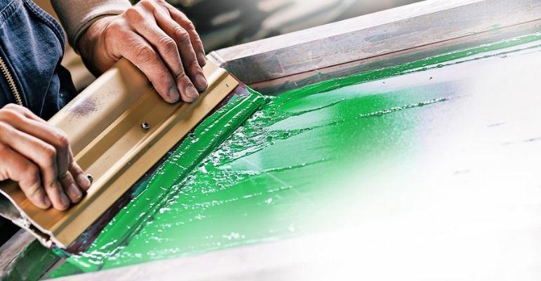
Matriz
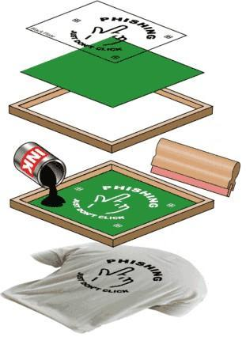
O processo de impressão consiste em vazar a tinta – pela pressão de um rodo ou puxador – através da tela previamente preparada.
A tela (matriz serigráfica) é esticada em um bastidor (quadro) de madeira, alumínio ou aço. A matriz é gravada pelo processo de
fotosensibilidade, onde é preparada com uma emulsão fotosensível e colocada sobre um fotolito e, posteriormente, sobre uma mesa de luz.
Os pontos escuros do fotolito correspondem aos locais que ficarão vazados na tela, permitindo a passagem da tinta pela trama do tecido.
Os pontos claros (onde a luz passará pelo fotolito atingindo a emulsão) são impermeabilizados pelo endurecimento da emulsão fotosensível
exposta a luz.
Para cada cor de impressão é utilizada uma matriz, resultando em um impresso com grande densidade de cor, saturação e textura.
Em quais tipos de suporte é possível imprimir?
Para confecção de estampas:
Camisetas
Bolsas de pano
Shorts
lenços
Outros suportes:
Papéis
Cartões
Plásticos
Vidros
Metais
Cerâmicas
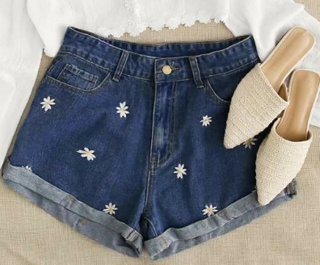
Shorts Estampado
Camisetas
Cores e tintas
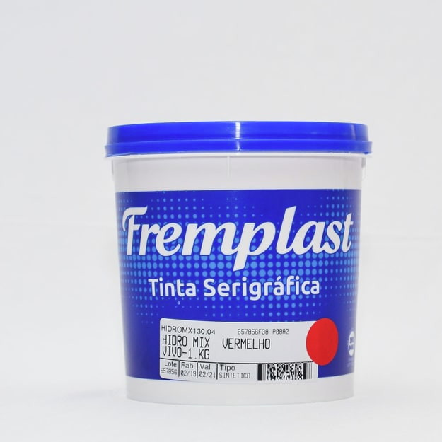
É possível obter estampas de qualidade com quatro a doze cores indexadas.
As tintas levam em conta o suporte, para tecidos utilizar tinta tecido.
Geralmente bases solventes por sua aderência e resistência em adesivos, plásticos e acrílicos.
Tiragem
Um dos métodos mais antigos de impressão, mas que foi totalmente modernizado pelas novas tecnologias,
é a serigrafia. Essa técnica é muito popular devido à grande diversidade de materiais em que pode ser
aplicada. É comum associar a serigrafia à impressão de camisetas, mas papéis, tecidos, cartões, plásticos,
vidros, metais e até cerâmica podem ser estampados com esse sistema.
Apropriado para pequenas ou médias tiragens
Rotogravura é um tipo de impressão onde a matriz é em baixo relevo e a imagem é gravada em um
cilindro feito geralmente de cobre.
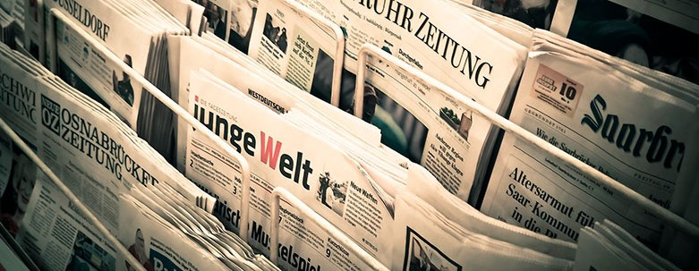
A matriz desse processo
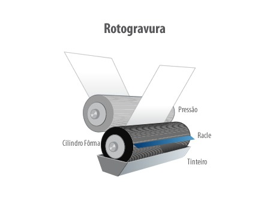
a Matriz é composta por um cilindro feito de cobre, cromado e gravado com a imagem. Logo após
a confecção da matriz, a arte é gravada por processo de deposição de metal através de eletrófise.
A impressão em si, no entanto, é efetuada pelo método de baixo relevo.
Suportes
Os suportes geralmente são lisos, flexíveis e macios. Para confecção
de embalagens:
Papel celofane
Plásticos
Alumínios
Cartolinas
Quantas Cores? Qual tipo de tinta?
No processo de impressão, o cilindro é instalado na máquina (normalmente com 8 cores).
Pode ser feita em branco, preto e colorido.
Este procedimento permite imprimir vários níveis de tonalidades cinzentas
sem que se utilizem redes, através da variação da profundidade das células
com tinta. Dessa forma, as células mais profundas reproduzem tons mais escuros
enquanto as células menos profundas, por possuírem menos tinta, reproduzem tons mais claros.
As tintas utilizadas são líquidas, com secagem por evaporação de solventes, secagem rápida.
P&B
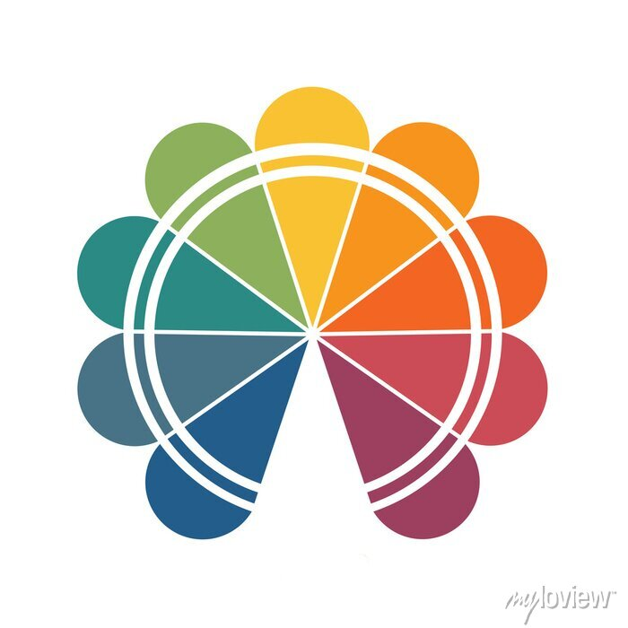
Colorido
Tiragem
Grandes jornais costumam utilizar esse sistema de impressão por conta da sua velocidade e eficiência.
Os materiais já saem dobrados e cortados, auxiliando na organização. Dependendo do produto, é possível
também que sua saída seja feita por grampos ou refilado em linha. Além disso, sua tinta costuma evaporar
mais rápido já que é misturada a solventes. Devido ao elevado custo e tempo de produção, é recomendado
para grandes tiragens
A impressão digital é um método de impressão de uma imagem digital diretamente
para uma variedade de mídias.
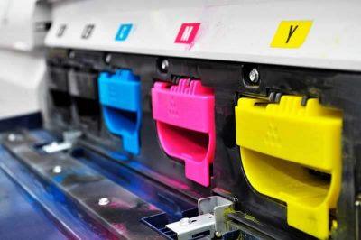
Se a impressão é digital... Como é a matriz?
A impressão digital é um tipo de impressão feita a partir de uma matriz digital,
sem a necessidade de uma matriz física difícil de ser feita, tornando mais fácil
confeccionar várias provas do material impresso antes de sua impressão definitiva.
Suportes para a Impressão digital
Embalagens:
Bolsas
Caixas
Pastas
Sacolas
Adesivos Vinílicos:
Pisos
Paredes
Vitrines
Portas
Carros
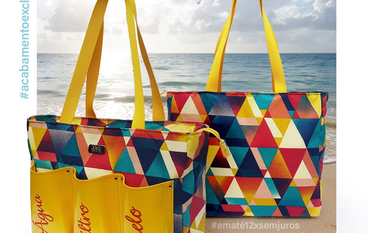
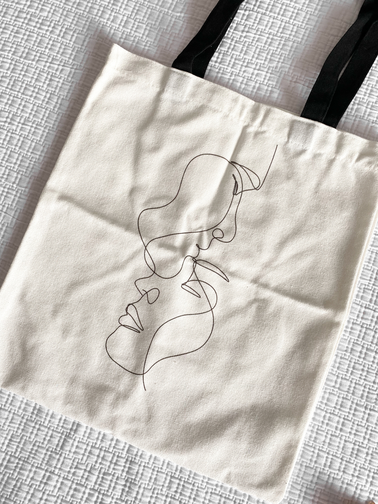
Cores e tintas
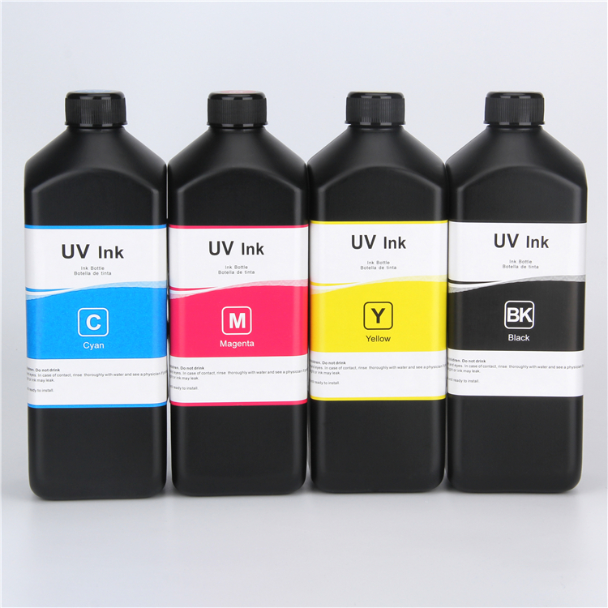
Utilizando até 12 cores na Impressão Digital, o que aumenta bastante o "gamut"
possível de cores, ainda assim os limites de reprodução são grandes
Tintas UV. O principal diferencial das tintas UV se dá pela sua alta
capacidade de adaptação em qualquer tipo de superfície ou substrato.
Por não possuir solvente em sua composição, ela é mais sustentável
e menos agressiva a saúde que as tintas convencionais.
Tintas látex e solventes
Tiragem
Esse tipo de gravura garante a mesma qualidade que a offset, porém com secagem de tinta
e impressão mais rápidas, já que não necessita da gravação em chapas. Além disso, permite
trabalhar nos mais diversos tamanhos, valorizando o nível de resolução e qualidade na impressão colorida.
A impressão digital é ideal para pequenas e médias impressões, para você ter um
bom custo-benefício e melhor aproveitamento no tempo de execução. Além disso, a qualidade da
imagem, a autonomia da impressora e a economia é ideal para ter alta eficiência.
É o nome dado ao processo de finalização de uma produção gráfica. Depois da criação da arte,
desenvolvimento do conteúdo, escolha de material, formato e tipo de impressão, o acabamento
gráfico é usado para garantir sofisticação estética às peças. E também sua durabilidade
Laminação
Existem 3 tipos:
Laminação fosca
Laminação Brilho
Laminação Soft /touch
Laminação é um procedimento de acabamento gráfico em que um impresso em papel – seja ele de
qualquer tipo – recebe uma camada fina e transparente de material plástico. Contudo, vale
ressaltar que esse processo difere por completo da plastificação. Além disso, este processo
promove maior durabilidade e resistência ao material impresso, dando a ele um aspecto tátil
e visual mais estético e agradável.
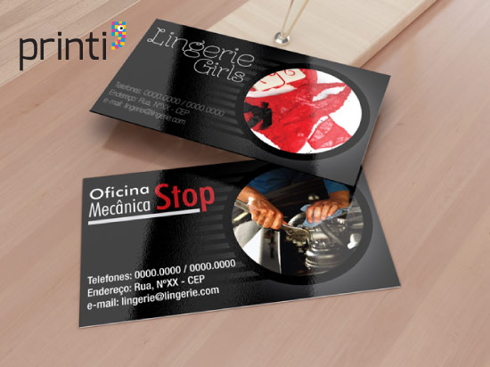
Laminação Brilho
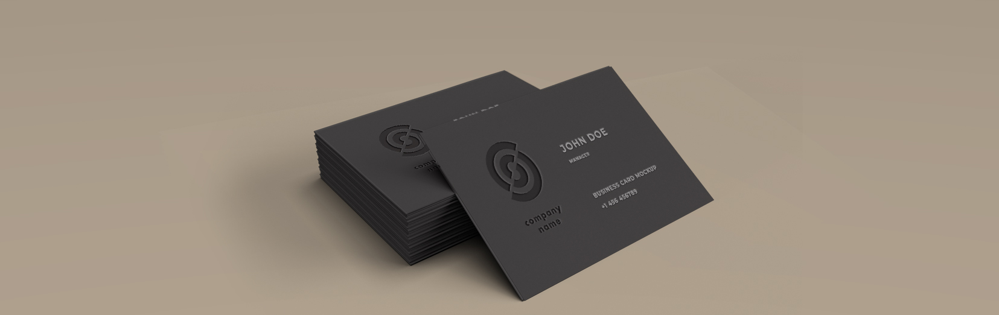
Laminação fosca
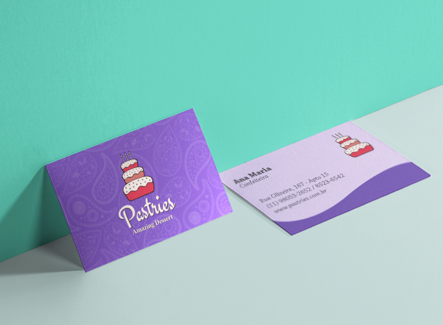
Soft Touch
Corte e Vinco
O corte e vinco consiste em uma série de lâminas dobradas e fixadas em uma madeira. Além disso,
estas lâminas são afiadas nos locais onde deverão cortar e ficam sem afiação onde existirão as
dobras no material.
A confecção delas é manual, de modo bem primitivo. Além disso, o molde (folha impressa) é fixado
sobre a madeira e, com um martelinho, fixa-se a lâmina, dobrando-a onde for necessário. Ou seja,
o trabalho é totalmente artesanal.
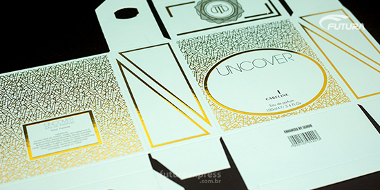
Corte e Vinco Hot Stamp
O hot stamp consiste impressão de documentos e materiais com a escrita metalizada em que os objetos
são pressionados por uma chapa quente. Logo depois, a fita se desprende, aderindo ao suporte que será
impresso formando a palavra, frase ou detalhe solicitado pelo cliente.
É importante ressaltar que a utilização de papel simples não é uma boa ideia, uma vez que a temperatura
aplicada durante a impressão torna improvável o serviço realizado. Além disso, é aconselhável que a
técnica seja usada em itens que ofereçam resistência como capas duras, papelões e produtos revestidos em couro.
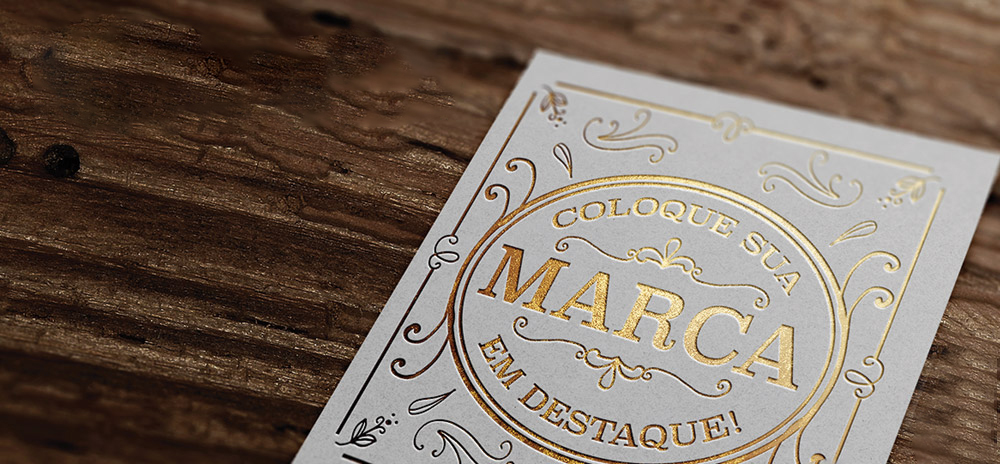
Hot Stamp Verniz localizado
O verniz localizado é um tipo de acabamento utilizado em elementos específicos de materiais impressos, dando brilho,
sofisticação e elegância ao detalhe escolhido. Para que o verniz localizado seja aplicado, é necessária a montagem de
uma máscara de verniz para indicar o local que receberá o acabamento.
Ele é utilizado para proporcionar brilho e lisura em detalhes específicos do projeto impresso. Por exemplo, em um
convite de formatura, o verniz localizado pode ser aplicado em textos, fotos ou outros objetos presentes. Tipos de verniz:
À base de água;
Verniz UV: podendo ser brilhante, aromatizado, texturizado, com glitter, entre outros
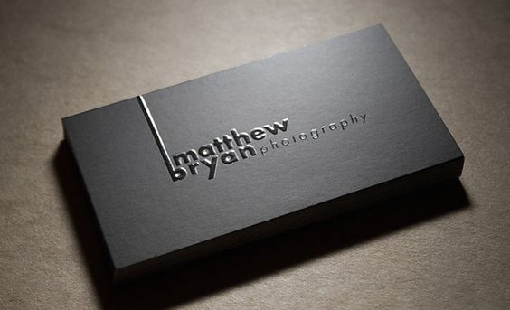
Verniz Localizado Relevo
O relevo é feito em papéis com gramatura maior que 180g, principalmente para cartões de visita e convites. Neste tipo de acabamento,
é criada uma sensação totalmente única e diferente ao toque, podendo ser feito o relevo alto ou profundo.
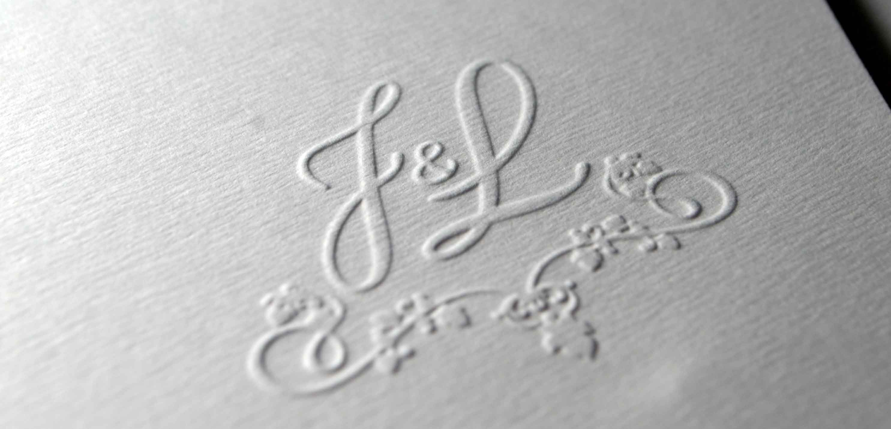
Relevo Seco Refile
O refile é também conhecido como corte simples, ou corte reto, que é realizado através de uma guilhotina. Além disso, a principal
função do refile é assegurar que os impressos serão cortados no tamanho e proporções devidos.

.jpg)